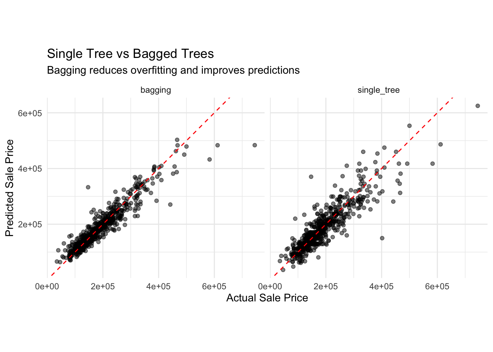
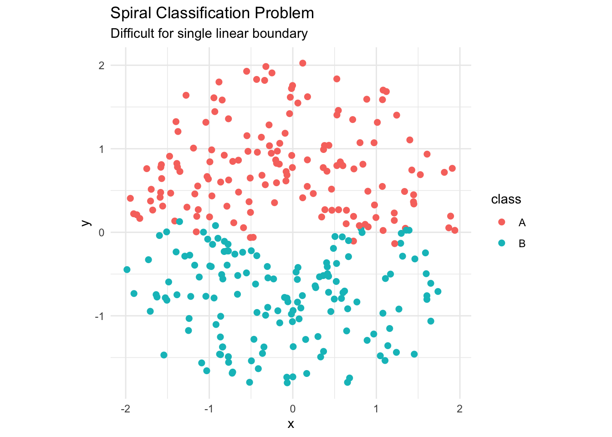
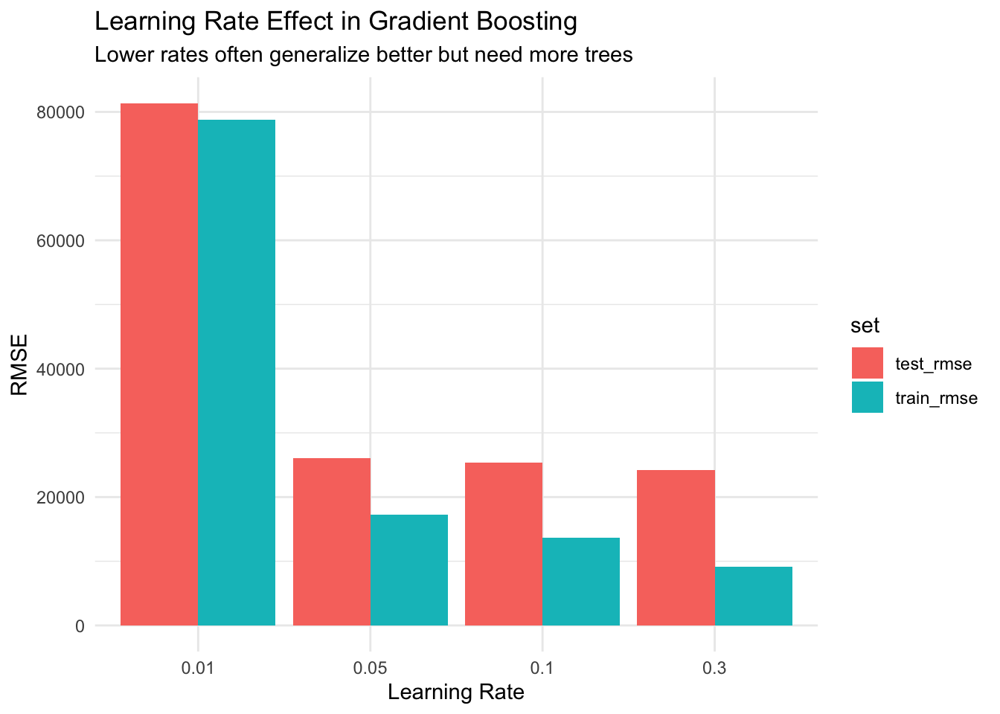
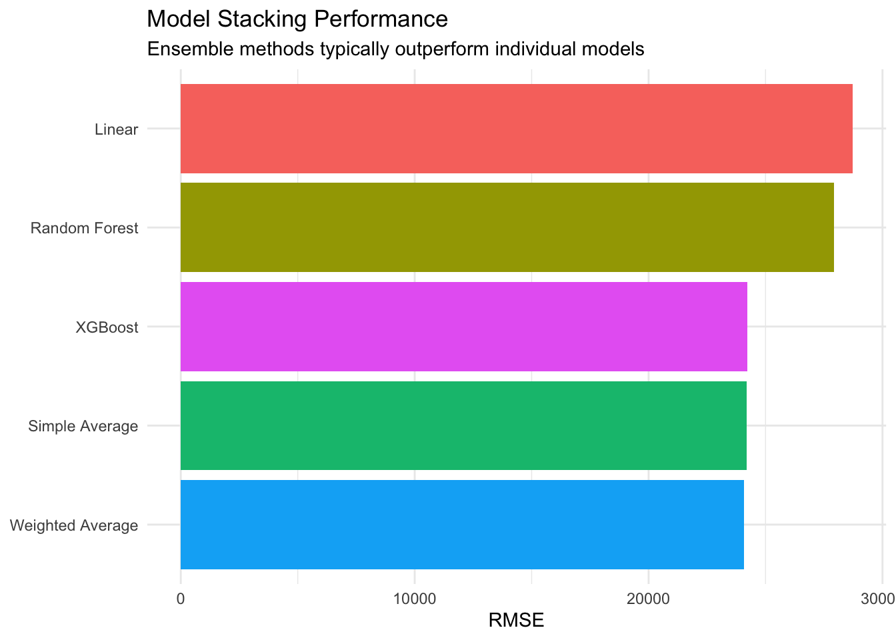
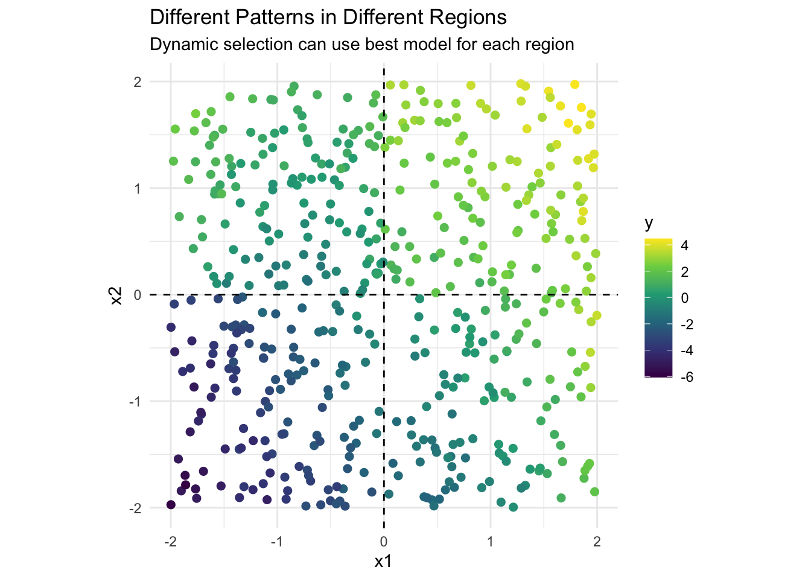
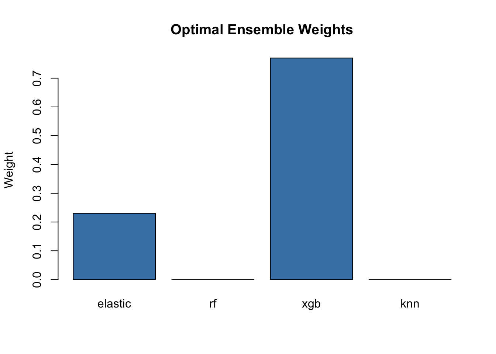

Imagine you’re trying to guess the number of jellybeans in a jar. One person might overestimate, another might underestimate, but the average of many guesses often comes remarkably close to the truth. This is the fundamental principle behind ensemble methods: combining multiple models can produce predictions that are more accurate than any individual model.
The mathematics behind this are elegant. If we have multiple independent models with uncorrelated errors, combining them reduces the overall error. This is why ensemble methods consistently win machine learning competitions.
v broom 1.0.10 v recipes 1.3.1
v dials 1.4.2 v rsample 1.3.1
v dplyr 1.1.4 v tailor 0.1.0
v ggplot2 4.0.0 v tidyr 1.3.1
v infer 1.0.9 v tune 2.0.0
v modeldata 1.5.1 v workflows 1.3.0
v parsnip 1.3.3 v workflowsets 1.1.1
v purrr 1.1.0 v yardstick 1.3.2
-- Conflicts ----------------------------------------- tidymodels_conflicts() --
x purrr::discard() masks scales::discard()
x dplyr::filter() masks stats::filter()
x dplyr::lag() masks stats::lag()
x recipes::step() masks stats::step()
library(tidyverse)
-- Attaching core tidyverse packages ------------------------ tidyverse 2.0.0 --
v forcats 1.0.0 v stringr 1.5.2
v lubridate 1.9.4 v tibble 3.3.0
v readr 2.1.5
-- Conflicts ------------------------------------------ tidyverse_conflicts() --
x readr::col_factor() masks scales::col_factor()
x purrr::discard() masks scales::discard()
x dplyr::filter() masks stats::filter()
x stringr::fixed() masks recipes::fixed()
x dplyr::lag() masks stats::lag()
x readr::spec() masks yardstick::spec()
i Use the conflicted package (<http://conflicted.r-lib.org/>) to force all conflicts to become errors
library(modeldata)library(vip)
Adjuntando el paquete: 'vip'
The following object is masked from 'package:utils':
vi
library(patchwork)library(stacks)
Registered S3 method overwritten by 'butcher':
method from
as.character.dev_topic generics
library(baguette)library(rules)
Adjuntando el paquete: 'rules'
The following object is masked from 'package:dials':
max_rules
library(ranger)library(xgboost)
Adjuntando el paquete: 'xgboost'
The following object is masked from 'package:dplyr':
slice
# Set theme and seedtheme_set(theme_minimal())set.seed(123)# Load and prepare datadata(ames)ames_split <-initial_split(ames, prop =0.75, strata = Sale_Price)ames_train <-training(ames_split)ames_test <-testing(ames_split)# Create resamples for evaluationames_folds <-vfold_cv(ames_train, v =5, strata = Sale_Price)# Prepare a simpler dataset for visualizationames_simple <- ames_train %>%select(Sale_Price, Gr_Liv_Area, Overall_Cond, Year_Built, Neighborhood) %>%slice_sample(n =500)
# Visualize predictionstest_predictions %>%pivot_longer(cols =c(single_tree, bagging), names_to ="model", values_to ="prediction") %>%ggplot(aes(x = actual, y = prediction)) +geom_point(alpha =0.5) +geom_abline(slope =1, intercept =0, color ="red", linetype ="dashed") +facet_wrap(~model) +labs(title ="Single Tree vs Bagged Trees",subtitle ="Bagging reduces overfitting and improves predictions",x ="Actual Sale Price",y ="Predicted Sale Price" ) +coord_equal()

Bagging characteristics: - Reduces variance without increasing bias - Works best with high-variance, low-bias models (like deep trees) - Parallel training possible (each bootstrap independent) - Out-of-bag (OOB) error provides free validation
Random Forests: Bagging with a Twist
Random forests add feature randomness to bagging:
# Compare different mtry valuesrf_comparison <-tibble(mtry_prop =c(0.1, 0.33, 0.5, 0.75, 1.0),mtry_desc =c("10% features", "33% features (sqrt)", "50% features", "75% features", "100% features (bagging)")) %>%mutate(model =map(mtry_prop, function(prop) {rand_forest(trees =100,mtry =floor(prop * (ncol(ames_train) -1)),min_n =5 ) %>%set_engine("ranger", importance ="impurity") %>%set_mode("regression") }) )# Fit all modelsrf_workflows <- rf_comparison %>%mutate(workflow =map(model, function(m) {workflow() %>%add_recipe(simple_recipe) %>%add_model(m) }) )# Evaluate with cross-validation (simplified for speed)rf_results <- rf_workflows %>%mutate(cv_results =map(workflow, ~fit_resamples( .,resamples =vfold_cv(ames_train, v =3), # Reduced folds for speedmetrics = yardstick::metric_set(yardstick::rmse, yardstick::rsq) )) )# Extract metricsrf_metrics <- rf_results %>%mutate(metrics =map(cv_results, collect_metrics) ) %>%unnest(metrics) %>%select(mtry_desc, .metric, mean, std_err)# Visualize mtry effectrf_metrics %>%filter(.metric =="rmse") %>%ggplot(aes(x = mtry_desc, y = mean)) +geom_col(fill ="steelblue") +geom_errorbar(aes(ymin = mean - std_err, ymax = mean + std_err), width =0.2) +labs(title ="Effect of Feature Randomness (mtry)",subtitle ="Moderate mtry often performs best",x ="Features Considered per Split",y ="RMSE" ) +theme(axis.text.x =element_text(angle =45, hjust =1))
Random forest advantages: - Further reduces overfitting compared to bagging - Decorrelates trees through feature sampling - Provides feature importance naturally - Robust to hyperparameters (often works well out-of-box)
Boosting: Learning from Mistakes
Boosting sequentially builds models, each learning from previous errors:
AdaBoost: The Original Boosting Algorithm
# Demonstrate boosting concept with simple example# Create a difficult classification datasetset.seed(789)spiral_data <-tibble(angle =runif(300, 0, 4* pi),radius =runif(300, 0.5, 2)) %>%mutate(x = radius *cos(angle) +rnorm(300, sd =0.1),y = radius *sin(angle) +rnorm(300, sd =0.1),class =factor(if_else(angle %% (2* pi) < pi, "A", "B")) )# Visualize the problemggplot(spiral_data, aes(x = x, y = y, color = class)) +geom_point(size =2) +labs(title ="Spiral Classification Problem",subtitle ="Difficult for single linear boundary" ) +coord_equal()

# Boosting builds sequential models# Each focuses on misclassified points from previous models
Gradient Boosting Machines (GBM)
# XGBoost - state-of-the-art gradient boostingxgb_spec <-boost_tree(trees =100,tree_depth =4,min_n =10,loss_reduction =0.01,sample_size =0.8,learn_rate =0.1) %>%set_engine("xgboost") %>%set_mode("regression")xgb_workflow <-workflow() %>%add_recipe(simple_recipe) %>%add_model(xgb_spec)# Fit the modelxgb_fit <- xgb_workflow %>%fit(ames_train)# Compare learning rateslearning_rates <-c(0.01, 0.05, 0.1, 0.3)lr_comparison <-map_df(learning_rates, function(lr) { spec <-boost_tree(trees =100,tree_depth =4,learn_rate = lr ) %>%set_engine("xgboost") %>%set_mode("regression") wf <-workflow() %>%add_recipe(simple_recipe) %>%add_model(spec)# Fit and evaluate fit <- wf %>%fit(ames_train)# Get training history (if available) train_pred <-predict(fit, ames_train) test_pred <-predict(fit, ames_test)tibble(learn_rate = lr,train_rmse =sqrt(mean((ames_train$Sale_Price - train_pred$.pred)^2)),test_rmse =sqrt(mean((ames_test$Sale_Price - test_pred$.pred)^2)) )})# Visualize learning rate effectlr_comparison %>%pivot_longer(cols =c(train_rmse, test_rmse), names_to ="set", values_to ="rmse") %>%ggplot(aes(x =factor(learn_rate), y = rmse, fill = set)) +geom_col(position ="dodge") +labs(title ="Learning Rate Effect in Gradient Boosting",subtitle ="Lower rates often generalize better but need more trees",x ="Learning Rate",y ="RMSE" )

Boosting characteristics: - Sequential training (can’t parallelize easily) - Focuses on difficult cases progressively - Can overfit if not regularized properly - Often achieves best single-model performance
Model Stacking: The Meta-Learning Approach
Stacking uses a meta-model to combine predictions from base models:
# Simple stacking example with manual blending# Create base modelslm_spec <-linear_reg() %>%set_engine("lm")rf_spec <-rand_forest(trees =200) %>%set_engine("ranger") %>%set_mode("regression")xgb_spec <-boost_tree(trees =100, tree_depth =4) %>%set_engine("xgboost") %>%set_mode("regression")# Fit modelslm_fit <-workflow() %>%add_recipe(simple_recipe) %>%add_model(lm_spec) %>%fit(ames_train)rf_fit <-workflow() %>%add_recipe(simple_recipe) %>%add_model(rf_spec) %>%fit(ames_train)xgb_fit <-workflow() %>%add_recipe(simple_recipe) %>%add_model(xgb_spec) %>%fit(ames_train)# Get predictions from each modellm_pred <-predict(lm_fit, ames_test)$.predrf_pred <-predict(rf_fit, ames_test)$.predxgb_pred <-predict(xgb_fit, ames_test)$.pred# Simple average ensembleavg_pred <- (lm_pred + rf_pred + xgb_pred) /3# Weighted average (weights could be tuned)weighted_pred <-0.2* lm_pred +0.4* rf_pred +0.4* xgb_pred# Calculate RMSE for each approachrmse_results <-tibble(Model =c("Linear", "Random Forest", "XGBoost", "Simple Average", "Weighted Average"),RMSE =c(sqrt(mean((ames_test$Sale_Price - lm_pred)^2)),sqrt(mean((ames_test$Sale_Price - rf_pred)^2)),sqrt(mean((ames_test$Sale_Price - xgb_pred)^2)),sqrt(mean((ames_test$Sale_Price - avg_pred)^2)),sqrt(mean((ames_test$Sale_Price - weighted_pred)^2)) ))# Display resultsknitr::kable(rmse_results, digits =0)
Model
RMSE
Linear
28724
Random Forest
27934
XGBoost
24228
Simple Average
24186
Weighted Average
24076
# Visualize ensemble effectggplot(rmse_results, aes(x =reorder(Model, RMSE), y = RMSE, fill = Model)) +geom_col() +coord_flip() +labs(title ="Model Stacking Performance",subtitle ="Ensemble methods typically outperform individual models",x =NULL ) +theme(legend.position ="none")

Voting Ensembles
For classification, voting combines predictions through majority vote or averaging:
# Measure diversity through correlation# Get predictions from base modelsbase_predictions <-map_dfc(models, ~predict(., class_test, type ="prob")$.pred_yes) %>%set_names(names(models))# Calculate correlation matrixcor_matrix <-cor(base_predictions)# Visualizecorrplot::corrplot(cor_matrix, method ="circle", type ="upper",title ="Model Prediction Correlations")
# Show how diversity affects ensemble performance# Create models with varying diversitydiverse_models <-list(# Similar models (low diversity)rf1 =rand_forest(trees =100, mtry =5) %>%set_engine("ranger") %>%set_mode("classification"),rf2 =rand_forest(trees =100, mtry =6) %>%set_engine("ranger") %>%set_mode("classification"),# Different model types (high diversity)linear =logistic_reg() %>%set_engine("glm"),tree =decision_tree(tree_depth =5) %>%set_engine("rpart") %>%set_mode("classification"))# Fit and evaluatediverse_fits <-map(diverse_models, function(model) {workflow() %>%add_recipe(class_recipe) %>%add_model(model) %>%fit(class_train)})# Compare ensemble of similar vs diverse modelssimilar_ensemble <-map_dfc(diverse_fits[1:2], ~predict(., class_test, type ="prob")$.pred_yes) %>%rowMeans()diverse_ensemble <-map_dfc(diverse_fits[3:4], ~predict(., class_test, type ="prob")$.pred_yes) %>%rowMeans()ensemble_comparison <-tibble(ensemble_type =c("Similar Models", "Diverse Models"),accuracy =c(mean((similar_ensemble >0.5) == (class_test$expensive =="yes")),mean((diverse_ensemble >0.5) == (class_test$expensive =="yes")) ))knitr::kable(ensemble_comparison, digits =3)
ensemble_type
accuracy
Similar Models
0.876
Diverse Models
0.858
Advanced Ensemble Techniques
Dynamic Ensemble Selection
Choose different models for different regions of the feature space:
# Demonstrate region-based ensemble# Create a 2D problem for visualizationset.seed(123)region_data <-tibble(x1 =runif(500, -2, 2),x2 =runif(500, -2, 2)) %>%mutate(region =case_when( x1 <0& x2 <0~"A", x1 >=0& x2 <0~"B", x1 <0& x2 >=0~"C",TRUE~"D" ),y =case_when( region =="A"~2* x1 + x2, # Linear in region A region =="B"~ x1^2+ x2, # Quadratic in region B region =="C"~sin(2* x1) + x2, # Sinusoidal in region CTRUE~exp(0.5* x1) + x2 # Exponential in region D ) +rnorm(500, sd =0.3) )# Visualize regionsggplot(region_data, aes(x = x1, y = x2, color = y)) +geom_point(size =2) +scale_color_viridis_c() +geom_vline(xintercept =0, linetype ="dashed") +geom_hline(yintercept =0, linetype ="dashed") +labs(title ="Different Patterns in Different Regions",subtitle ="Dynamic selection can use best model for each region" ) +coord_equal()

Cascade Ensembles
Use simple models for easy cases, complex models for hard cases:
# Demonstrate cascade concept# First tier: Simple, fast modelsimple_model <-linear_reg() %>%set_engine("lm")simple_fit <-workflow() %>%add_recipe(simple_recipe) %>%add_model(simple_model) %>%fit(ames_train)# Get predictions and residualssimple_pred <-predict(simple_fit, ames_train)train_with_residuals <- ames_train %>%mutate(simple_pred = simple_pred$.pred,residual = Sale_Price - simple_pred,is_difficult =abs(residual) >quantile(abs(residual), 0.75) )# Second tier: Complex model for difficult casescomplex_model <-boost_tree(trees =200, tree_depth =6) %>%set_engine("xgboost") %>%set_mode("regression")# Train on difficult casesdifficult_cases <- train_with_residuals %>%filter(is_difficult)complex_recipe <-recipe(residual ~ Gr_Liv_Area + Year_Built + Total_Bsmt_SF, data = difficult_cases)complex_fit <-workflow() %>%add_recipe(complex_recipe) %>%add_model(complex_model) %>%fit(difficult_cases)cat("Cascade ensemble:\n")
Cascade ensemble:
cat("- Simple model handles", sum(!train_with_residuals$is_difficult), "cases\n")
- Simple model handles 1648 cases
cat("- Complex model handles", sum(train_with_residuals$is_difficult), "difficult cases\n")
- Complex model handles 549 difficult cases
Best Practices for Ensembles
1. Ensure Model Diversity
# Strategies for diversitydiversity_strategies <-tibble(Strategy =c("Different algorithms","Different hyperparameters","Different features","Different training samples","Different target transformations" ),Example =c("Linear + Tree + Neural Network","Shallow trees + Deep trees","Subset 1 features + Subset 2 features","Bootstrap + Stratified + Random","Log(y) + sqrt(y) + y" ),Benefit =c("Captures different patterns","Varies complexity","Different perspectives","Reduces correlation","Different error distributions" ))knitr::kable(diversity_strategies)
Strategy
Example
Benefit
Different algorithms
Linear + Tree + Neural Network
Captures different patterns
Different hyperparameters
Shallow trees + Deep trees
Varies complexity
Different features
Subset 1 features + Subset 2 features
Different perspectives
Different training samples
Bootstrap + Stratified + Random
Reduces correlation
Different target transformations
Log(y) + sqrt(y) + y
Different error distributions
2. Choose Appropriate Ensemble Method
# Decision guideensemble_guide <-tibble(Scenario =c("High-variance base models","Need interpretability","Limited computational budget","Maximizing performance","Imbalanced classes","Different expertise regions" ),`Recommended Method`=c("Bagging or Random Forest","Simple voting or linear stacking","Voting ensemble","Gradient boosting or stacking","Balanced bagging or cost-sensitive boosting","Dynamic selection" ))knitr::kable(ensemble_guide)
Scenario
Recommended Method
High-variance base models
Bagging or Random Forest
Need interpretability
Simple voting or linear stacking
Limited computational budget
Voting ensemble
Maximizing performance
Gradient boosting or stacking
Imbalanced classes
Balanced bagging or cost-sensitive boosting
Different expertise regions
Dynamic selection
Exercises
Exercise 1: Build a Custom Ensemble
Create your own ensemble combining different approaches:
# Your solution# Create a custom ensemble for Ames housingcustom_recipe <-recipe(Sale_Price ~ ., data = ames_train) %>%step_rm(Street, Utilities, Condition_2, Roof_Matl, Heating, Pool_QC, Misc_Feature, Pool_Area, Longitude, Latitude) %>%step_impute_median(all_numeric_predictors()) %>%step_normalize(all_numeric_predictors()) %>%step_dummy(all_nominal_predictors())# Base modelsbase_models <-list(# Regularized regressionelastic =linear_reg(penalty =0.01, mixture =0.5) %>%set_engine("glmnet"),# Tree-basedrf =rand_forest(trees =200, mtry =10, min_n =5) %>%set_engine("ranger") %>%set_mode("regression"),# Boostingxgb =boost_tree(trees =100, tree_depth =5, learn_rate =0.1) %>%set_engine("xgboost") %>%set_mode("regression"),# Local modelknn =nearest_neighbor(neighbors =15) %>%set_engine("kknn") %>%set_mode("regression"))# Fit all base modelsbase_fits <-map(base_models, function(model) {workflow() %>%add_recipe(custom_recipe) %>%add_model(model) %>%fit(ames_train)})# Get out-of-sample predictions using cross-validation# (In practice, use proper validation set)val_split <-initial_split(ames_train, prop =0.8)val_train <-training(val_split)val_test <-testing(val_split)# Refit on validation trainingval_fits <-map(base_models, function(model) {workflow() %>%add_recipe(custom_recipe) %>%add_model(model) %>%fit(val_train)})# Get validation predictions for stackingval_predictions <-map_dfc(val_fits, ~predict(., val_test)$.pred) %>%set_names(names(base_models))# Train meta-learnermeta_data <- val_predictions %>%mutate(target = val_test$Sale_Price)meta_model <-lm(target ~ ., data = meta_data)# Function to make ensemble predictionsensemble_predict <-function(new_data) {# Get base predictions base_preds <-map_dfc(base_fits, ~predict(., new_data)$.pred) %>%set_names(names(base_models))# Apply meta-modelpredict(meta_model, base_preds)}# Evaluate custom ensembleensemble_pred <-ensemble_predict(ames_test)ensemble_rmse <-sqrt(mean((ames_test$Sale_Price - ensemble_pred)^2))# Compare with individual modelsindividual_rmse <-map_dbl(base_fits, function(fit) { pred <-predict(fit, ames_test)$.predsqrt(mean((ames_test$Sale_Price - pred)^2))})results <-c(individual_rmse, ensemble = ensemble_rmse)results <-sort(results)barplot(results, main ="Custom Ensemble Performance",ylab ="RMSE", col =c(rep("steelblue", length(results)-1), "coral"))
# Show optimal weightsbarplot(optimal_weights, main ="Optimal Ensemble Weights",ylab ="Weight", col ="steelblue")

Exercise 3: Implement Boosting from Scratch
Understand boosting by implementing a simple version:
# Your solution# Simple boosting implementationsimple_boosting <-function(x, y, n_iterations =10, learning_rate =0.1) { n <-length(y)# Initialize with mean predictions <-rep(mean(y), n) models <-list()for (i in1:n_iterations) {# Calculate residuals residuals <- y - predictions# Fit a simple model to residuals (using a decision stump)# For simplicity, we'll use a linear model here model_data <-data.frame(x = x, residual = residuals) weak_model <-lm(residual ~ x, data = model_data)# Store model models[[i]] <- weak_model# Update predictions update <-predict(weak_model, model_data) predictions <- predictions + learning_rate * update# Calculate current error current_rmse <-sqrt(mean((y - predictions)^2))cat("Iteration", i, "- RMSE:", current_rmse, "\n") }return(list(models = models, final_predictions = predictions,learning_rate = learning_rate))}# Test on simple datatest_x <- ames_train$Gr_Liv_Area[1:100]test_y <- ames_train$Sale_Price[1:100]boost_result <-simple_boosting(test_x, test_y, n_iterations =10)
Key takeaways: - Ensembles almost always outperform single models - Diversity is crucial for ensemble success - Different methods suit different problems - Boosting for accuracy, bagging for stability - Stacking combines strengths of different approaches - Computational cost vs performance trade-off
What’s Next?
In Chapter 17, we’ll explore unsupervised learning techniques for discovering patterns without labels.